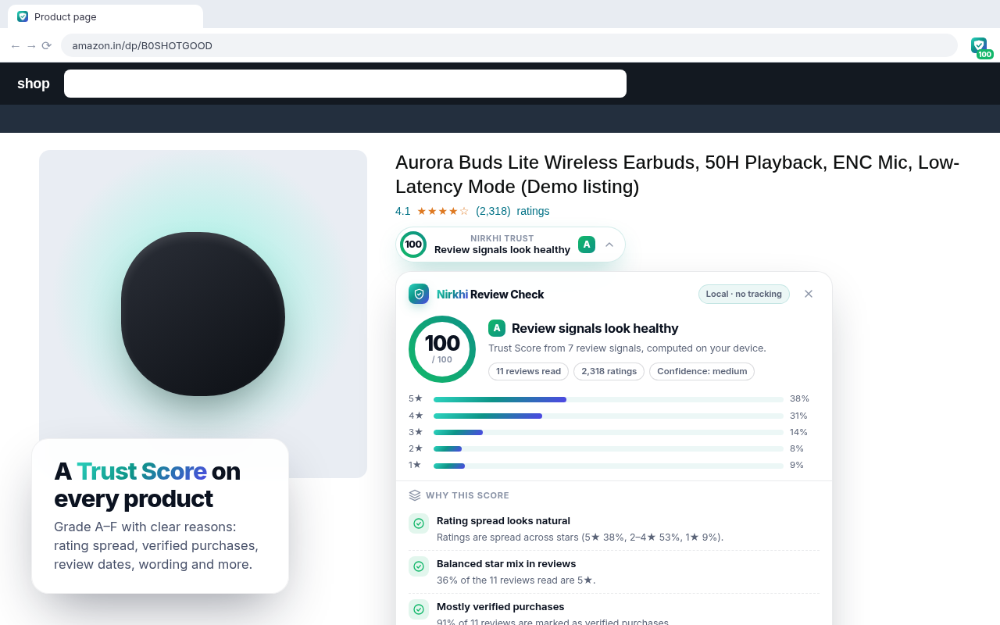

Nirkhi – AI Review Checker
Trust Score for Amazon.in & Flipkart product reviews. Runs on your device.

Trust Score A–F0–100 score with clear reasons from the reviews on the page.
Unusual review signalsTemplated text, date bursts, few verified buyers, J-shaped ratings.
Pros & consOn-device AI (Gemini Nano) when available, keyword summary otherwise.
PrivateNo servers, no analytics, no account. Settings stay in your browser.
The Trust Score is an automated estimate from review patterns. It does not prove any review, seller or product is genuine or not genuine. Not affiliated with Amazon or Flipkart.